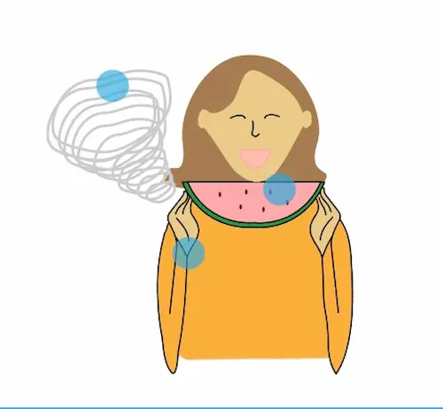
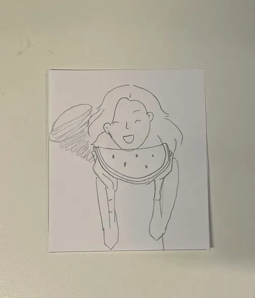
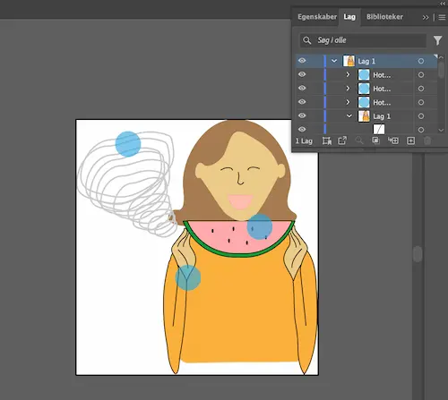

Vi blev introduceret til Adobe illustartor i dette tema. Ved at eksperimentere og lære om Adobe i undervisning fik jeg udviklet mine kompentencer inden brugergrænseflader i form af udvikling af figur-elementer, siktsering og udvikling af ide osv. Efter designprocessen anvendte jeg relevant css og javascript til den endlige figur.
Introduktion til Grundlæggende Indhold
I temaet arbejdede jeg med udvikling af visuelle og interaktive brugergrænseflader med fokus på sammenhængen mellem design og funktionalitet. Jeg arbejdede med udvikling af UI-elementer og vektorgrafik i Adobe Illustrator og SVG-format samt med CSS og JavaScript til at skabe interaktivitet. Samtidig arbejdede jeg med avancerede CSS-teknikker, JavaScript-grundbegreber og tilgængelighed, så løsningerne både blev visuelt sammenhængende og brugervenlige.
Løsning
Proces
Jeg valgte min papairsprototype ud fra ide-genereingsøvsler vi lavede i klassen. Procsessen startede med mindmaps som var effektivt for ide-genering, men jeg vil særligt fremhæve crossmethod. Denne skabte den færdige ide om, at spise i stormvejr.
Læring
Jeg lærte meget af processen. Jeg er blevet særligt opmærksom på hvor vigtigt det er er at lave lag på de valgte hotspots i adobe. Det havde jeg ikke gjort til at starte med - som vist på billedet. Det gav nogle komplekationer da jeg koble javascript på. Jeg nemt kunne have undgået, men det var en meget lærrig del af processen
